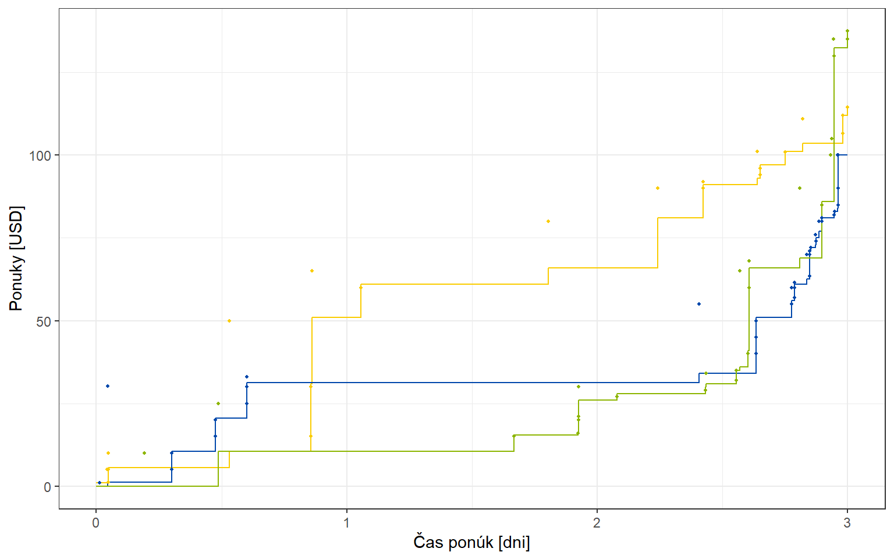
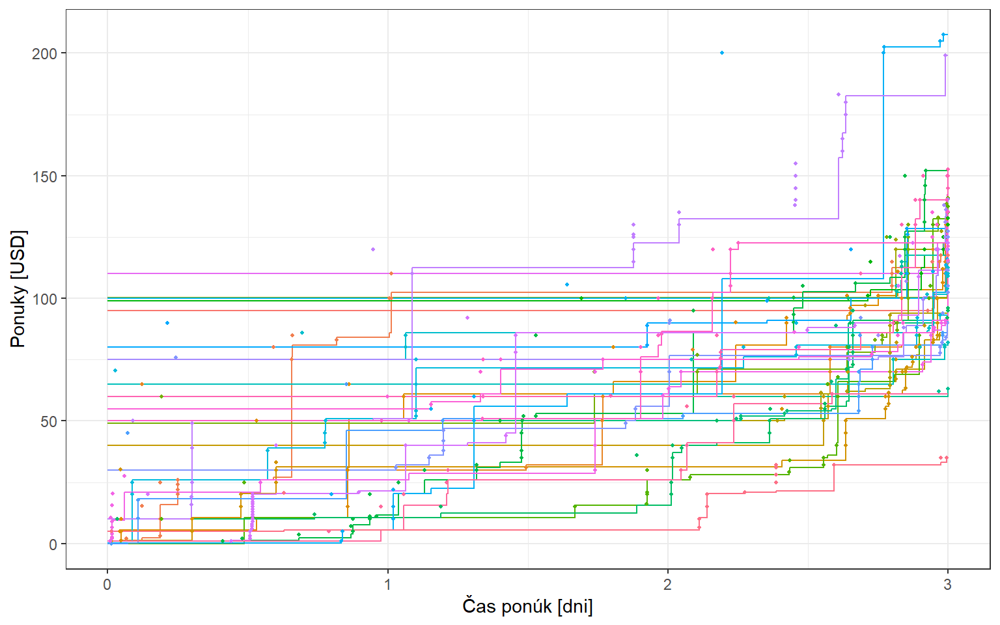

Kapitola 5 Vplyv hyperparametrov
Code
set.seed(2)
n <- 100
f <- function(x) 5 - 10*x + 5*exp(-100*(x - 0.3)^2) - 5*exp(-100*(x - 0.7)^2)
x <- runif(n)
w <- rnorm(n, sd = 0.5)
y <- 10*w + f(x) + rnorm(n, sd = 2)
df_sim <- data.frame(x = x, y = y, w = w, f = f(x))
xx <- seq(0, 1, by = 0.01)
df_fun <- data.frame(x = xx, f = f(xx))
p1 <- ggplot() +
geom_line(data = df_fun,
aes(x = x, y = f), color = blue[2], size = 0.7) +
theme_bw() +
theme(legend.position = "none")
p2 <- ggplot() +
geom_point(data = df_sim,
aes(x = x, y = y - 10*w), color = blue[2], size = 0.7) +
theme_bw() +
theme(legend.position = "none")
p3 <- ggplot() +
geom_point(data = df_sim,
aes(x = x, y = y), color = blue[2], size = 0.7) +
theme_bw() +
theme(legend.position = "none")
(p1 | p2 | p3)

Obrázok 5.1: Simulované dáta
Code
mcmc <- list(nblow = 10000, nskip = 10, smcmc = 5000, ndisp = 5000)
prior <- list(iflagprior = 0,
beta_m0 = c(0, 0), beta_v0 = diag(100, 2),
tau2_m0 = 1, tau2_v0 = 100,
w0 = 2,
sigma2_m0 = 1, sigma2_v0 = 1000)
set.seed(2)
fout1 <- bsar(y ~ w + fs(x), nbasis = 50, mcmc = mcmc, prior = prior,
shape = "Free", marginal.likelihood = TRUE, spm.adequacy = TRUE)
fit1 <- fitted(fout1, HPD = FALSE)
p1 <- ggplot() +
geom_polygon(aes(x = c(fit1$xgrid, rev(fit1$xgrid)),
y = c(fit1$fxgrid$lower, rev(fit1$fxgrid$upper))),
fill = gray) +
geom_point(aes(x = fit1$x, y = fit1$y - fit1$wbeta$mean),
size = 0.6, color = "black") +
geom_line(aes(x = fit1$xgrid, y = fit1$fxgrid$mean), color = red, size = 0.8) +
#ylim(c(-10.5, 10.5)) +
theme_bw() +
labs(x = "Čas [dni]",
y = "Parametrické reziduá") +
theme(axis.title.x = element_text(size = 8, vjust = 0.3),
axis.title.y = element_text(size = 8, vjust = 1.6),
axis.text.x = element_text(size = 7, color = "black"),
axis.text.y = element_text(size = 7, color = "black"),
panel.border = element_rect(size = 1, color = "black"),
plot.margin = unit(c(2, 2, 2, 2), "pt"),
legend.position = "none")
p1 